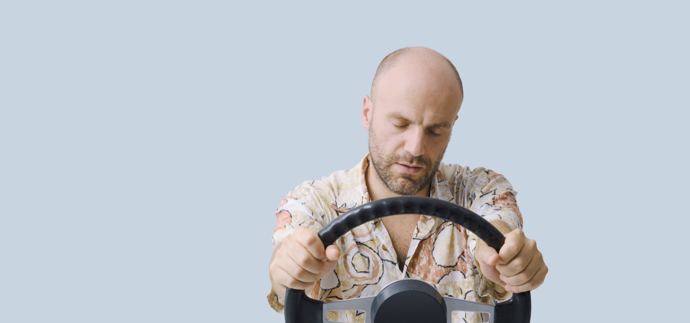

Un parcours guidé en plusieurs étapes. Chaque étape se déverrouille lorsque vous avez exploré son contenu et validé la question de contrôle.
Introduction
Ce module rassemble les connaissances techniques de base que l'IDSR mobilise dans ses actions de prévention.
Objectif 1Connaître les effets et les règles relatives à l'alcool, aux stupéfiants et aux médicaments.
Objectif 2Comprendre l'influence de la vitesse.
Objectif 3Maîtriser les repères sur les protections, la vigilance et les distracteurs.
Comment ça marche : cliquez sur les cartes pour découvrir leur contenu, puis répondez à la question pour déverrouiller l'étape suivante.
Alcool
L'alcool est impliqué dans près d'un tiers des accidents mortels. Comprendre ses effets physiologiques et le cadre légal est indispensable pour tout acteur de prévention.
Cliquez sur chaque carte pour en savoir plus.
Chaque verre servi au bar contient environ 10 g d'alcool pur. L'alcool reste le premier facteur des accidents mortels : présent dans 32 % d'entre eux (formation Agir, données 2019).
Image Adobe Stock — licence standard.
🔒 Question de déverrouillage
À partir de quel taux d'alcool dans le sang parle-t-on de délit ?
Stupéfiants et médicaments
Les substances psychoactives — illicites ou médicamenteuses — altèrent les capacités de conduite et engagent la responsabilité pénale du conducteur.
Cliquez sur chaque carte pour en savoir plus.
Médicaments et conduite : trois niveaux de pictogrammes
Arrêté du 18 juillet 2005. Le niveau de risque figure sur la boîte du médicament.
🔒 Question de déverrouillage
Conduire après usage de stupéfiants est...
Vitesse
La vitesse détermine les distances d'arrêt et l'énergie libérée lors d'un choc. En comprendre les mécanismes permet d'en illustrer concrètement les conséquences.
Cliquez sur chaque carte pour en savoir plus.
La distance de sécurité (intervalle de 2 secondes)
Décret du 23 novembre 2001. Plus la vitesse augmente, plus la distance à respecter s'allonge.
🔒 Question de déverrouillage
Quelle est la distance de sécurité minimale entre deux véhicules ?
Protections, vigilance et téléphone
Les équipements de protection, la gestion du sommeil et l'usage du téléphone constituent trois leviers essentiels de la prévention routière.
Cliquez sur chaque carte pour en savoir plus.

Malaise et fatigue : 10 % des accidents mortels — et 17 % sur autoroute. Une heure de sommeil en moins chaque jour équivaut à une nuit blanche en fin de semaine (formation Agir).
Image Adobe Stock — licence standard.
49 % des Français reconnaissent utiliser leur téléphone au volant ; écrire un message détourne les yeux de la route 5 secondes et multiplie le risque par 23 (formation Agir / Sécurité routière).
Image Adobe Stock — licence standard.
🔒 Question de déverrouillage
De combien l'envoi d'un message multiplie-t-il le risque d'accident ?
Synthèse — vérifiez vos acquis
Répondez aux deux questions pour valider le module.
🔒 Question 1
À quelle vitesse l'alcool est-il éliminé par l'organisme ?
🔒 Question 2
L'usage du téléphone tenu en main au volant est...
✓
Module terminé
Vous disposez des repères techniques essentiels pour vos actions. Prochaine étape conseillée : la valise de l'IDSR et la communication.
Source des contenus : documentation du programme IDSR (formation initiale, Pôle d'appui régional de la sécurité routière — DREAL Hauts-de-France) et securite-routiere.gouv.fr.